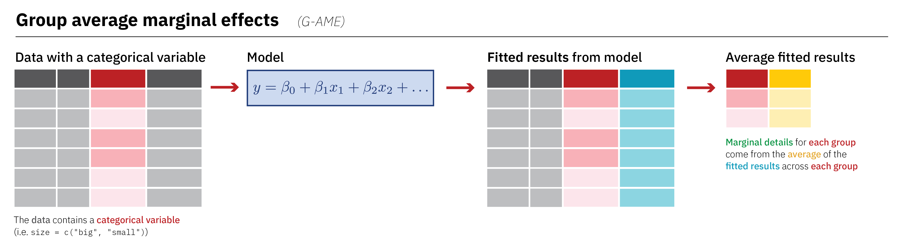

library(tidyverse)
library(broom)
library(marginaleffects)
library(emmeans)
library(palmerpenguins)
library(WDI)
library(countrycode)
library(vdemdata) # install from GitHub (vdeminstitute/vdemdata) not CRAN!
theme_set(theme_bw())marginaleffects and emmeans
From: https://www.andrewheiss.com/blog/2022/05/20/marginalia
Setup environment
Prep data
# Get data from the World Bank's API
wdi_raw <- WDI(country = "all",
indicator = c(population = "SP.POP.TOTL",
gdp_percapita = "NY.GDP.PCAP.KD"),
start = 2000, end = 2020, extra = TRUE)
# Clean up the World Bank data
wdi_2020 <- wdi_raw %>%
filter(region != "Aggregates") %>%
filter(year == 2020) %>%
mutate(log_gdp_percapita = log(gdp_percapita)) %>%
select(-region, -status, -year, -country, -lastupdated, -lending)
# Get data from V-Dem and clean it up
vdem_2020 <- vdem %>%
select(country_name, country_text_id, year, region = e_regionpol_6C,
disclose_donations_ord = v2eldonate_ord,
public_sector_corruption = v2x_pubcorr,
polyarchy = v2x_polyarchy, civil_liberties = v2x_civlib) %>%
filter(year == 2020) %>%
mutate(disclose_donations = disclose_donations_ord >= 3,
disclose_donations = ifelse(is.na(disclose_donations), FALSE, disclose_donations)) %>%
# Scale these up so it's easier to talk about 1-unit changes
mutate(across(c(public_sector_corruption, polyarchy, civil_liberties), ~ . * 100)) %>%
mutate(region = factor(region,
labels = c("Eastern Europe and Central Asia",
"Latin America and the Caribbean",
"Middle East and North Africa",
"Sub-Saharan Africa",
"Western Europe and North America",
"Asia and Pacific")))
# Combine World Bank and V-Dem data into a single dataset
corruption <- vdem_2020 %>%
left_join(wdi_2020, by = c("country_text_id" = "iso3c")) %>%
drop_na(gdp_percapita)
corruptionFit and interrogate models (slopes, AME and MEM)
Simple model
ggplot(corruption, aes(x = civil_liberties, y = public_sector_corruption)) +
geom_point() +
stat_smooth(method = "lm", formula = y ~ x) +
labs(x = "Civil liberties index", y = "Public sector corruption index")model_simple <- lm(public_sector_corruption ~ civil_liberties,
data = corruption)
tidy(model_simple)Marginal effect (i.e., slope/partial derivative) of civil liberties on public sector corruption:
\[ E(y \mid x) = \beta_0 + \beta_1 x \]
\[ E(\text{public_sector_corruption} \mid \text{civil_liberties}) = 102.39 + (-0.81 \times \text{civil_liberties}) \]
\[ \frac{\partial E(y \mid x)}{\partial x} = \beta_1 \]
\[ \frac{\partial E(\text{public_sector_corruption} \mid \text{civil_liberties})}{\partial \text{civil_liberties}} = -0.81 \]
model_simple %>%
slopes(variables = "civil_liberties",
newdata = datagrid(civil_liberties = c(25, 55, 80)),
eps = 0.001)model_simple %>%
emtrends(specs = ~ civil_liberties,
var = "civil_liberties",
at = list(civil_liberties = c(25, 55, 80)),
delta.var = 0.001) %>%
test() # to add p.valuemodel_simple %>%
plot_slopes(variables = "civil_liberties",
condition = "civil_liberties")Square model
ggplot(corruption, aes(x = civil_liberties, y = public_sector_corruption)) +
geom_point() +
stat_smooth(method = "lm", formula = y ~ x + I(x^2)) +
labs(x = "Civil liberties index", y = "Public sector corruption index")model_sq <- lm(public_sector_corruption ~ civil_liberties + I(civil_liberties^2),
data = corruption)
tidy(model_sq)Marginal effect (i.e., slope/partial derivative) of civil liberties on public sector corruption:
\[ E(y \mid x) = \beta_0 + \beta_1 x + \beta_2 x^2 \]
\[ E(\text{public_sector_corruption} \mid \text{civil_liberties}) = 47.19 + (1.42 \times \text{civil_liberties}) + (-0.02 \times \text{civil_liberties}^2) \]
\[ \frac{\partial E(y \mid x)}{\partial x} = \beta_1 + 2 \beta_2 x \]
\[ \frac{\partial E(\text{public_sector_corruption} \mid \text{civil_liberties})}{\partial \text{civil_liberties}} = 1.42 + (2 \times -0.02 \times \text{civil_liberties}) \]
# Extract the two civil_liberties coefficients
civ_lib1 <- tidy(model_sq) %>% filter(term == "civil_liberties") %>% pull(estimate)
civ_lib2 <- tidy(model_sq) %>% filter(term == "I(civil_liberties^2)") %>% pull(estimate)
# Make a little function to do the math
civ_lib_slope <- function(x) civ_lib1 + (2 * civ_lib2 * x)
civ_lib_slope(c(25, 55, 80))[1] 0.4898 -0.6249 -1.5538model_sq %>%
slopes(variables = "civil_liberties",
newdata = datagrid(civil_liberties = c(25, 55, 80)),
eps = 0.001)model_sq %>%
emtrends(specs = ~ civil_liberties,
var = "civil_liberties",
at = list(civil_liberties = c(25, 55, 80)),
delta.var = 0.001) %>%
test() # to add p.valuemodel_sq %>%
plot_slopes(variables = "civil_liberties",
condition = "civil_liberties")So far, marginaleffects::slopes() and emmeans::emtrends() have given identical results. But behind the scenes, these packages take two different approaches to averaging. The difference is very subtle, but incredibly important.
By default, marginaleffects calculates the average marginal effect (AME):
model_sq %>% slopes(variables = "civil_liberties") %>% tibble()model_sq %>% slopes(variables = "civil_liberties") %>% pull(estimate) %>% mean()[1] -1.165model_sq %>% avg_slopes(variables = "civil_liberties")By default, emmeans calculates the marginal effect at the mean (MEM):
model_sq %>%
emtrends(specs = ~ civil_liberties,
var = "civil_liberties") %>%
test()Same as:
model_sq %>% slopes(variables = "civil_liberties", newdata = "mean")Logit model
So far, comparing average marginal effects (AME) with marginal effects at the mean (MEM) hasnt been that useful, since both marginaleffects and emtrends provided nearly identical results with our simple model with civil liberties squared. Thats because nothing that strange is going on in the modelthere are no additional explanatory variables, no interactions or logs, and were using OLS and not anything fancy like logistic regression or beta regression. Things change once we leave the land of OLS!
Lets make a new model that predicts if a country has campaign finance disclosure laws based on public sector corruption. Disclosure laws is a binary outcome, so well use logistic regression to constrain the fitted values and predictions to between 0 and 1.
ggplot(corruption,
aes(x = public_sector_corruption, y = as.numeric(disclose_donations))) +
geom_point() +
geom_smooth(method = "glm", formula = y ~ x, method.args = list(family = binomial(link = "logit"))) +
labs(x = "Public sector corruption",
y = "Presence or absence of\ncampaign finance disclosure laws\n(Line shows predicted probability)")Even without any squared terms, were already in non-linear land. We can build a model and explore this relationship:
model_logit <- glm(
disclose_donations ~ public_sector_corruption,
family = binomial(link = "logit"),
data = corruption
)
tidy(model_logit)The coefficients here are on a different scale and are measured in log odds units (or logits), not probabilities or percentage points. That means we cant use those coefficients directly. We cant say things like a one-unit increase in public sector corruption is associated with a 0.068 percentage point decrease in the probability of having a disclosure law. Thats wrong! We have to convert those logit scale coefficients to a probability scale instead.
model_logit %>% avg_slopes(variables = "public_sector_corruption")The average marginal effect for public sector corruption is 0.0084, which means that on average, a one-point increase in the public sector corruption index (i.e. as corruption gets worse) is associated with a 0.84 percentage point decrease in the probability of a country having a disclosure law.
By default emmeans returns the results on the logit scale, but we can convert them to the response/percentage point scale by adding the regrid = "response" argument:
model_logit %>%
emtrends(specs = ~ public_sector_corruption,
var = "public_sector_corruption",
regrid = "response") %>%
test()Thats different (and bigger!) than the AME we found with marginaleffects!
model_logit %>% slopes(variables = "public_sector_corruption", newdata = "mean")Thats fascinating! The confidence interval around the AME is really small compared to the MEM, likely because the AME estimate comes from the average of 168 values, while the MEM is the prediction of a single value. Additionally, while both estimates hover around a 1 percentage point decrease, the AME is larger than 1 while the MEM is smaller.
# Get tidied results from marginaleffects()
plot_ame <- model_logit %>%
slopes(variables = "public_sector_corruption") %>%
tidy()
# Get tidied results from emtrends()
plot_mem <- model_logit %>%
emtrends(~ public_sector_corruption,
var = "public_sector_corruption",
regrid = "response") %>%
tidy(conf.int = TRUE) %>%
rename(estimate = public_sector_corruption.trend)
# Combine the two tidy data frames for plotting
plot_effects <- bind_rows("AME" = plot_ame, "MEM" = plot_mem, .id = "type")
ggplot(plot_effects, aes(x = estimate * 100, y = fct_rev(type), color = type)) +
geom_vline(xintercept = 0, linetype = "dashed") +
geom_pointrange(aes(xmin = conf.low * 100, xmax = conf.high * 100)) +
labs(x = "Marginal effect (percentage points)", y = NULL)Fancy logit model
For fun, lets make a super fancy logistic regression model with a quadratic term and an interaction:
model_logit_fancy <- glm(
disclose_donations ~ public_sector_corruption + I(public_sector_corruption^2) +
polyarchy + log_gdp_percapita + public_sector_corruption * region,
family = binomial(link = "logit"),
data = corruption
)model_logit_fancy %>% avg_slopes(variables = "public_sector_corruption")model_logit_fancy %>%
emtrends(~ public_sector_corruption,
var = "public_sector_corruption",
regrid = "response")NOTE: Results may be misleading due to involvement in interactions public_sector_corruption public_sector_corruption.trend SE df asymp.LCL
45.9 -0.0102 0.00325 Inf -0.0166
asymp.UCL
-0.00387
Results are averaged over the levels of: region
Confidence level used: 0.95 model_logit_fancy %>% slopes(variables = "public_sector_corruption", newdata = "mean")plot_ame_fancy <- model_logit_fancy %>%
marginaleffects(variables = "public_sector_corruption") %>%
tidy()
plot_mem_fancy <- model_logit_fancy %>%
marginaleffects(variables = "public_sector_corruption", newdata = "mean") %>%
tidy()Warning: Some of the variable names are missing from the model data: term# Combine the two tidy data frames for plotting
plot_effects <- bind_rows("AME" = plot_ame_fancy, "MEM" = plot_mem_fancy, .id = "type") %>%
filter(term == "public_sector_corruption") %>%
mutate(nice_slope = estimate * 100)
ggplot(plot_effects, aes(x = estimate * 100, y = fct_rev(type), color = type)) +
geom_vline(xintercept = 0, linetype = "dashed") +
geom_pointrange(aes(xmin = conf.low * 100, xmax = conf.high * 100)) +
labs(x = "Marginal effect (percentage points)", y = NULL)To make life even more exciting, were not limited to just average marginal effects (AMEs) or marginal effects at the mean (MEMs). Additionally, if we think back to the slider/switch/mixing board analogy, all weve really done so far with our logistic regression model is move one slider (public_sector_corruption) up and down. What happens if we move other switches and sliders at the same time?
We can use both marginaleffects and eemmeans to play with our models full mixing board. Well continue to use the logistic regression model as an example since its sensitive to the order of averaging.
Marginal effects by group
If we have categorical covariates in our model like region, we can find the average marginal effect (AME) of continuous predictors across those different groups. This is fairly straightforward when working with marginaleffects because of its approach to averaging. Remember that with the AME, each original row gets its own fitted value and each individual slope, which we can then average and collapse into a single row. Group characteristics like region are maintained after calculating predictions, so we can calculate group averages of the individual slopes. This outlines the process:

model_logit_fancy %>%
slopes(variables = "public_sector_corruption") %>%
tibble()model_logit_fancy %>%
slopes(variables = "public_sector_corruption",
by = "region") %>%
tibble()model_logit_fancy %>%
emtrends(specs = ~ public_sector_corruption + region,
var = "public_sector_corruption",
regrid = "response") %>%
test()model_logit_fancy %>%
slopes(variables = "public_sector_corruption",
newdata = "mean",
by = "region") %>%
tibble()Marginal effects at user-specified or representative values
If we want to unlock the full potential of our regression mixing board, we can feed the model any values we want. In general, we'll (1) make a little dataset with covariate values set to either specific values that we care about, or typical or average values, (2) plug that little dataset into the the model and get fitted values, and (3) work with the results. There are a bunch of different names for this little fake dataset like "data grid" and "reference grid", but they're all the same idea. Here's an overview of the approach:
Now that we have a hypothetical data grid of sliders and switches set to specific values, we can plug it into the model and generate fitted values. Importantly, doing this provides us with results that are analogous to the marginal effects at the mean (MEM) that we found earlier, and not the average marginal effect (AME), since we're not feeding the entire original dataset to the model. None of these hypothetical rows exist in real lifethere is no country with any of these exact combinations of corruption, polyarchy/democracy, GDP per capita, or region.
regions_to_use = c("Western Europe and North America",
"Latin America and the Caribbean",
"Middle East and North Africa")model_logit_fancy %>%
slopes(variables = "public_sector_corruption",
newdata = datagrid(public_sector_corruption = c(20, 80),
region = regions_to_use)) %>%
tibble()model_logit_fancy %>%
emtrends(~ public_sector_corruption + region,
var = "public_sector_corruption",
at = list(public_sector_corruption = c(20, 80),
region = regions_to_use),
regrid = "response") %>%
test()model_logit_fancy %>%
predictions(newdata = datagrid(public_sector_corruption = c(20, 80),
region = regions_to_use)) %>%
tibble()model_logit_fancy %>%
emmeans(specs = ~ public_sector_corruption + region,
var = "public_sector_corruption",
at = list(public_sector_corruption = c(20, 80),
region = regions_to_use),
regrid = "response") %>%
test()plot_predictions(model_logit_fancy, condition = c("public_sector_corruption", "region"))Average marginal effects at counterfactual user-specified values

Categorical contrasts as statistical/marginal effects
XXX